Most photographers are used to shooting portraits with a medium focal length. Lenses like the 50mm and 85mm are the most common for portraits. Why not use a wide angle? A wide angle easily distorts the person. This distortion has both downsides and upsides, but few people can make the upsides work for them.
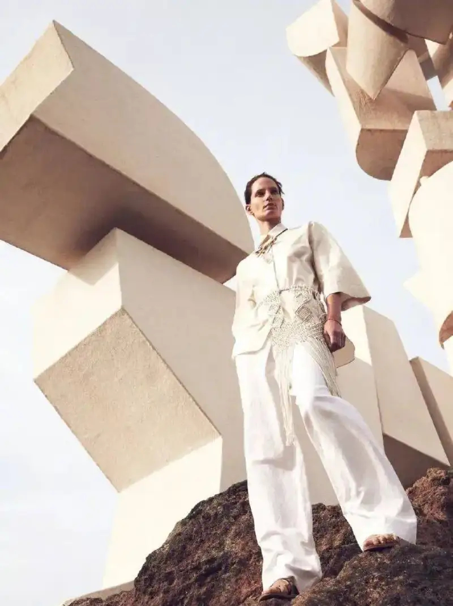
In fact, fashion, portrait, and wedding photography all use the wide angle.
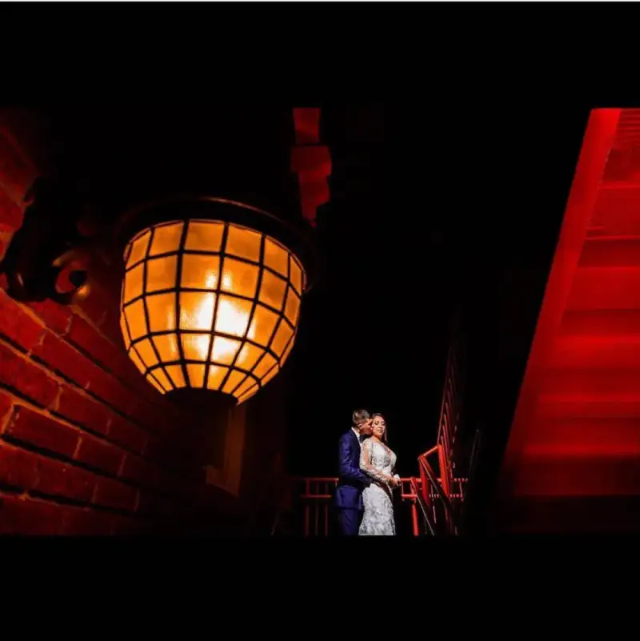
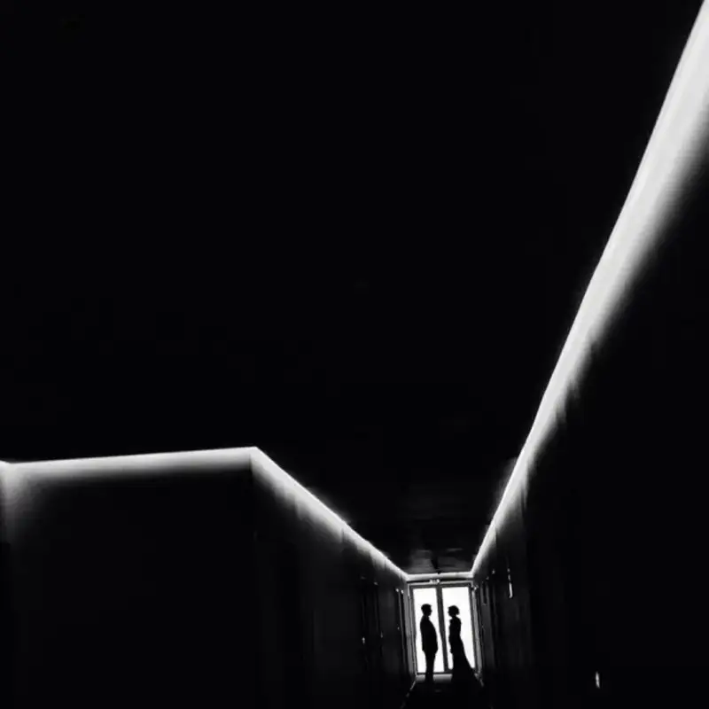
Today we look at how to use wide-angle perspective distortion to shoot portrait photos with real character.
1. Low angle
A low angle is essential in fashion photography. The closer you get, the more you bring out the tension of the low angle.
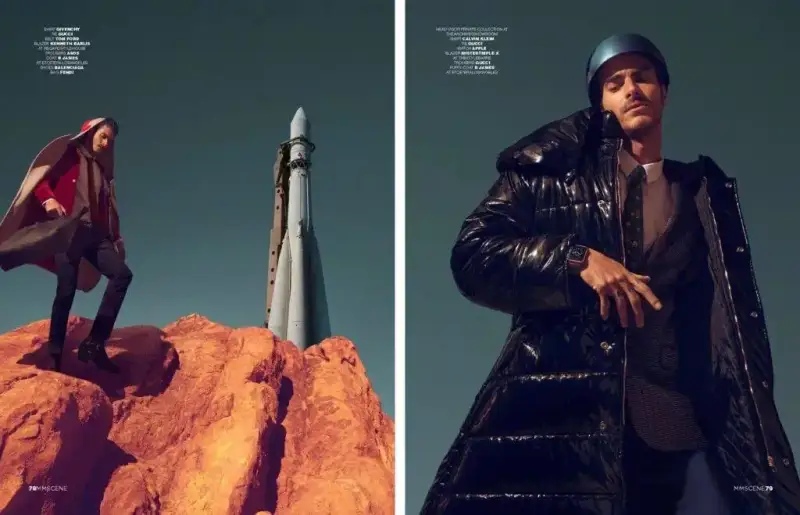
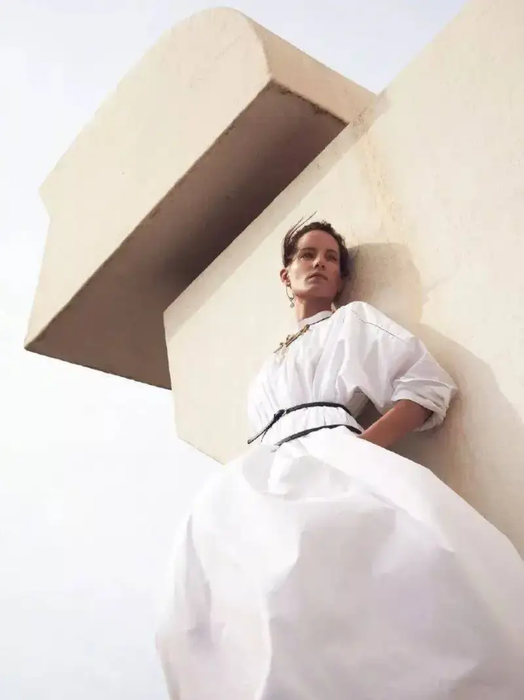
2. Tension of lines
Shadows on the ground and the outline of buildings both create a strong sense of perspective under a wide angle.
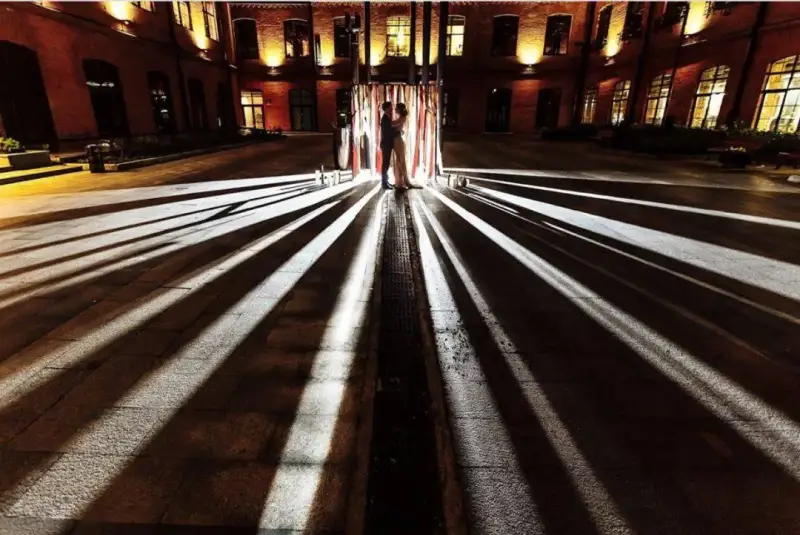
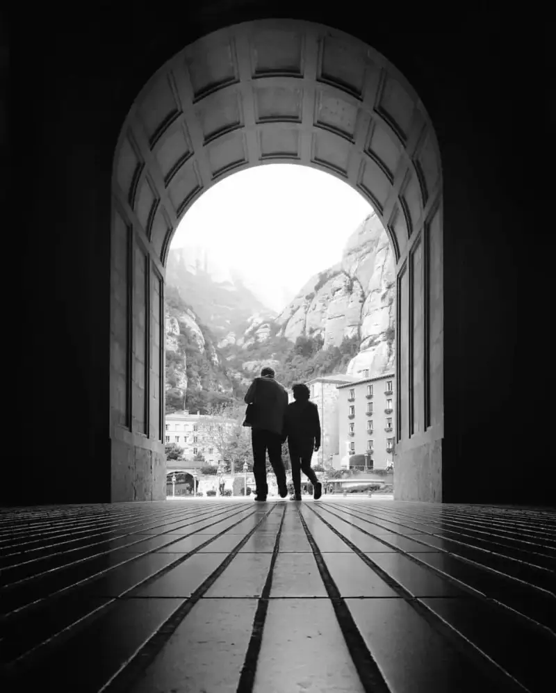
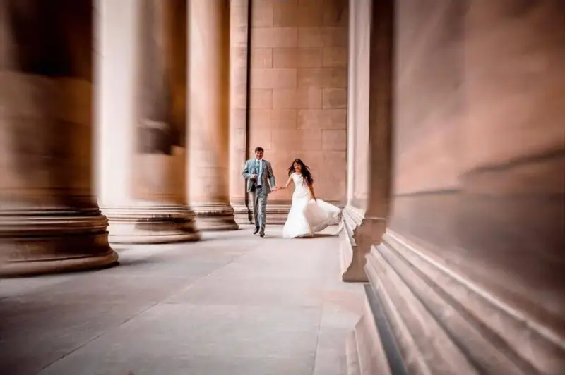
3. Emphasize the foreground
Use foreground elements to block the frame. This shrinks the subject's share of the image, and brings out the visual impact of the foreground.
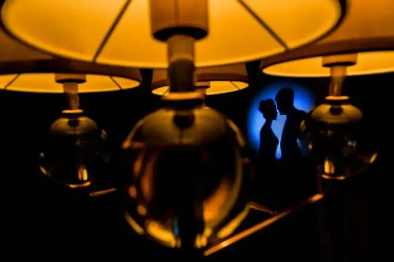
4. Tight spaces
When you shoot everyday portraits with a wide angle, place the subject in the center to focus the eye there.
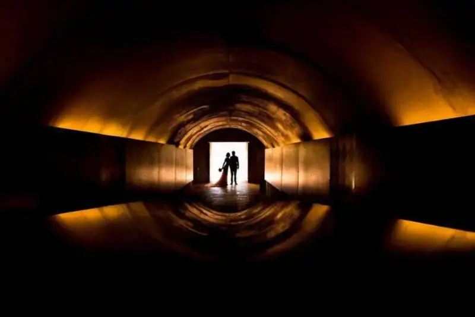
5. Irregular lines
Messy lines bring out the wide-angle sense of perspective, and make the whole frame feel more open.
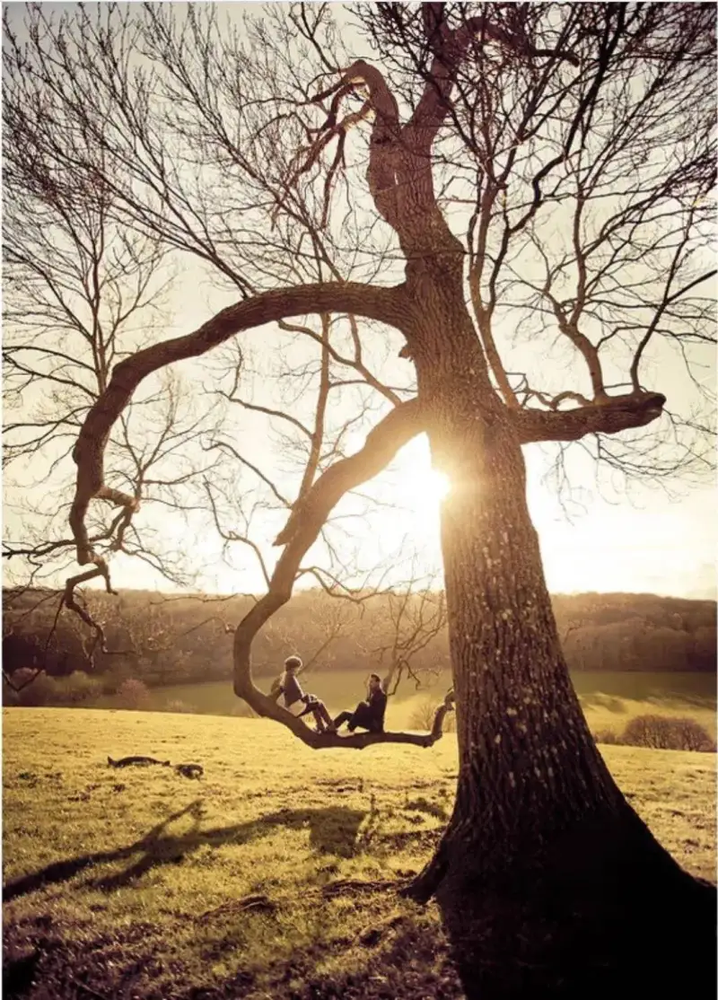
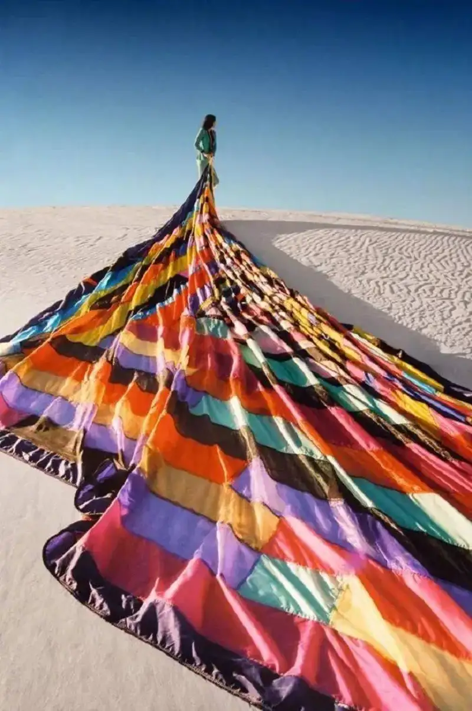
6. Choosing the angle
The key to wide-angle portraits is to use framing, foreground blocking, and low angles often. Use the wide angle especially when a scene has strong lines.
Framing
Foreground blocking
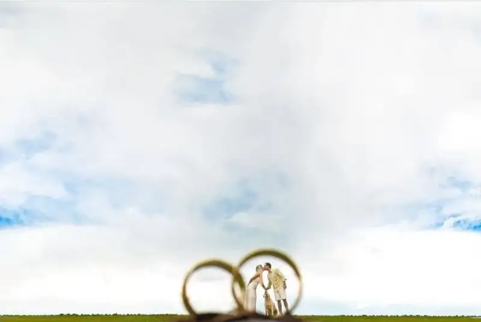
Low angle
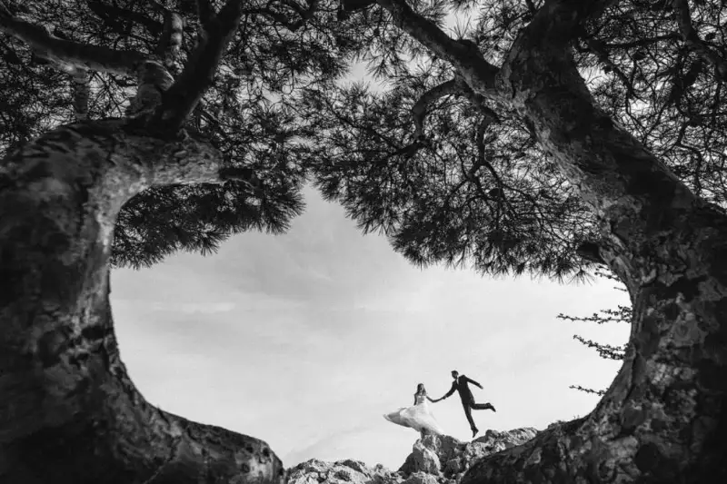
A sense of lines
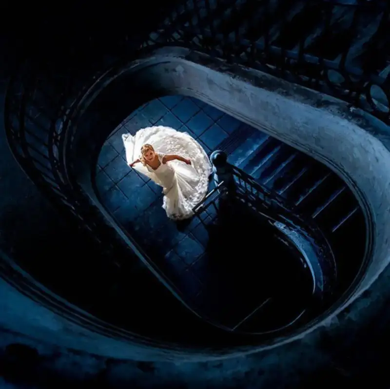